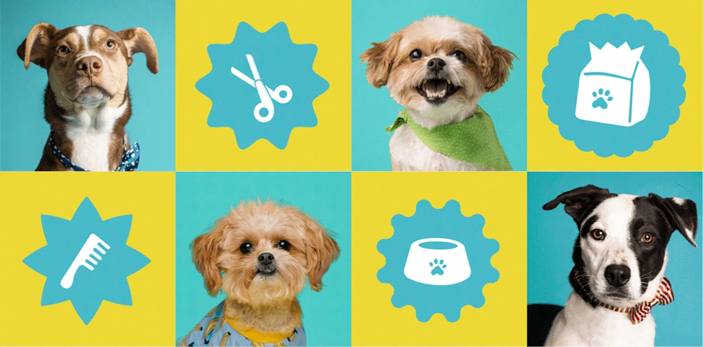

Branding e Identidad Visual
Realizamos un proyecto de 2 meses a más donde aplicamos una metodología que hemos pulido durante más de 3 años realizando branding e identidad visual.
- Etapa 01: Descubrimiento Inicial
- Etapa 02: Definición de Perfil Estratégico
- Etapa 03: Dirección creativa temprana
- Etapa 04: Propuestas de diseño
- Etapa 05: Revisión y ajustes
- Etapa 06: Entregables finales
